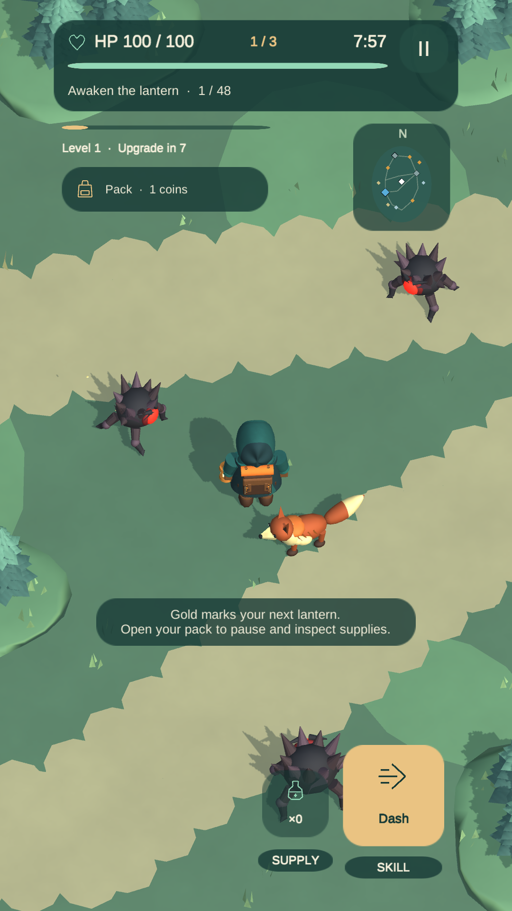
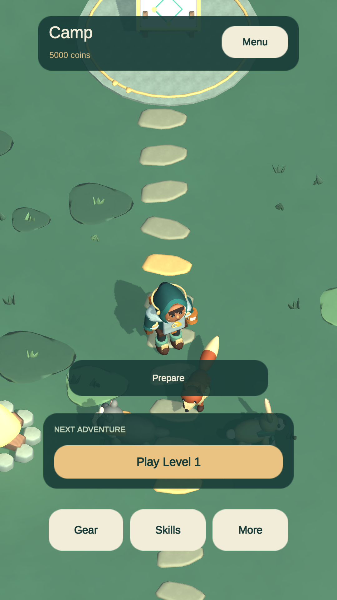

Find your next lantern
Travel through three forest regions. Your lantern fires automatically while you move around enemy attacks, gather materials and follow the minimap to objectives.
Take your lantern into the forest. Dodge enemy attacks, explore with an animal companion and bring your supplies back to camp.
Available in the United States, Canada, Australia and New Zealand.
Free to download · Ages 13+ · No in-app purchases · Optional rewarded ads for eligible players aged 15+
By Oreniq Games
Travel through three forest regions. Your lantern fires automatically while you move around enemy attacks, gather materials and follow the minimap to objectives.
Choose an animal companion, equipment and an active skill. Return to camp to craft gear, exchange surplus materials and prepare for your next expedition.
Actual gameplay screenshots from the Google Play listing.


A guided first expedition introduces the controls. Revisit tutorials from Settings without losing your progress. No game account is required; progress is saved on your device, with no cloud save.
Ordinary progression never requires an ad. Eligible players aged 15 and older can choose optional rewarded ads for extra Coins and materials. Availability and privacy choices apply.
Lantern Rovers is designed for ages 13 and older. Google Play may require an age or parental-approval check before gameplay.